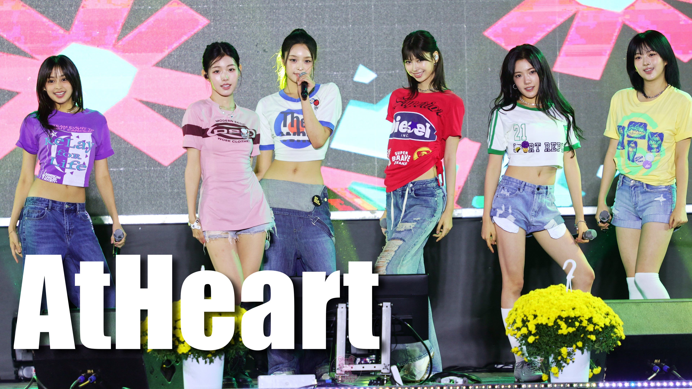

그룹 앳하트(AtHeart)가 ‘2026 구리 코스모스 축제’의 마지막 날 무대에 올라 축제의 대미를 장식했다.
앳하트는 경기도 구리시 구리한강시민공원에서 열린 ‘2026 구리 코스모스 축제’ 폐막식 축하공연에 참여해 관람객들과 만났다. 가을 코스모스가 어우러진 축제 현장에서 펼쳐진 이번 무대는 아티스트의 현장 활동을 기록하는 한 장면으로 남았다.
구리 코스모스 축제는 코스모스 꽃단지를 중심으로 공연과 다양한 체험 프로그램을 선보이는 가을 행사다. 축제의 마지막 날에도 폐막식 축하공연 등 다양한 프로그램이 마련돼 사흘간 이어진 행사를 마무리했다.
FANTUBE ARCHIVE MEDIA는 앞으로도 아티스트들의 공연과 축제 현장, 다양한 엔터테인먼트 소식을 영상과 기사로 기록할 예정이다.